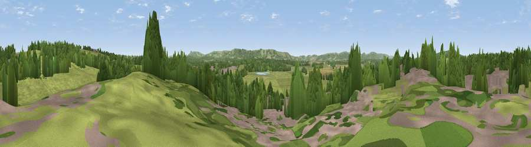

Viewpoint near Marehill
#40868 in England · top 75% of its area beats it · near Marehill · path 273 mWhere it is
The exact computed spot (TQ 05825 18775). Click the marker for map links.
Public access: the nearest public right of way is about 273 m away — the final stretch may cross private land. Computed from Natural England's CRoW access layer and OpenStreetMap rights of way — not the legal definitive map. Always verify locally.
The view, rendered

A 360° render of this exact spot computed from the terrain model, tree cover and land cover — summer colours, afternoon light, calibrated against photographs of famous viewpoints. Real trees, hedges and buildings will differ in detail.
The panorama
Grey silhouette: terrain skyline in each direction (720 bearings, Earth curvature and refraction included). Dashed green: skyline with trees (+15 m) and buildings (+8 m) as obstacles. Blue strip: how far the ground is visible on each bearing.
Where the view opens
Wedge length = distance to the farthest visible ground on that bearing (vegetation-aware). Rings at 10, 25 and 50 km.
What fills the view
55% grassland · 29% woodland · 10% built-up · 5% cropland ·
Angular shares of the visible panorama (visual magnitude), not map area. Landscape diversity 0.48 (0–1 Shannon).
Key numbers
More beautiful places nearby
The staircase of upgrades: each row has a higher view potential than everything closer. Driving times are estimates from straight-line distance, calibrated against real road routing — check an actual route before setting out.
| Place | Direction | Drive | Score |
|---|---|---|---|
| Viewpoint near Pulborough | NNW · 2 km | ~4 min | 28.4 |
| Viewpoint near Nutbourne | NE · 2 km | ~4 min | 43.7 |
| Toat Hill | NNW · 3 km | ~7 min | 50.1 |
| Viewpoint near Stopham | NW · 5 km | ~11 min | 65.4 |
| Viewpoint near Amberley | S · 6 km | ~13 min | 82.3 |
| Viewpoint near Storrington | SSE · 7 km | ~14 min | 83.9 |
| Westburton Hill | SW · 9 km | ~17 min | 84.2 |
| Bignor Hill | SW · 9 km | ~18 min | 84.4 |
50.95869, -0.49459 · source: screening · position refined by local search. Computed location — check access rights before visiting.